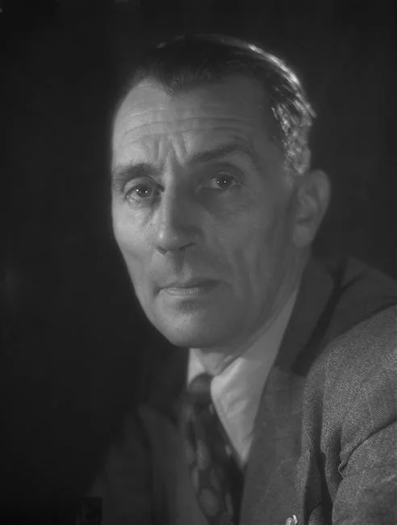
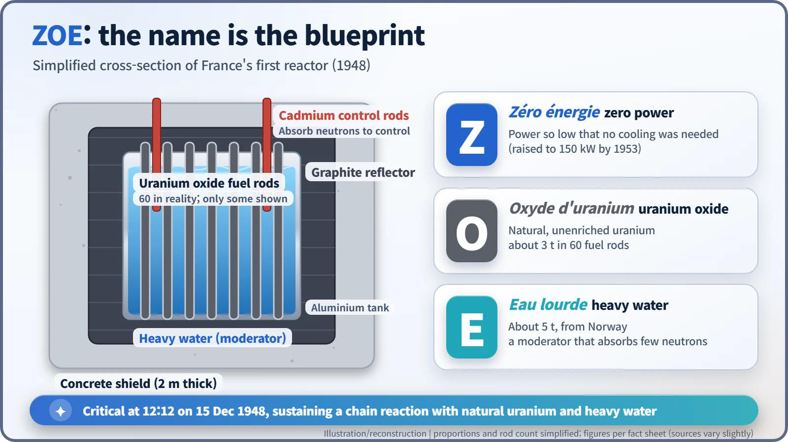
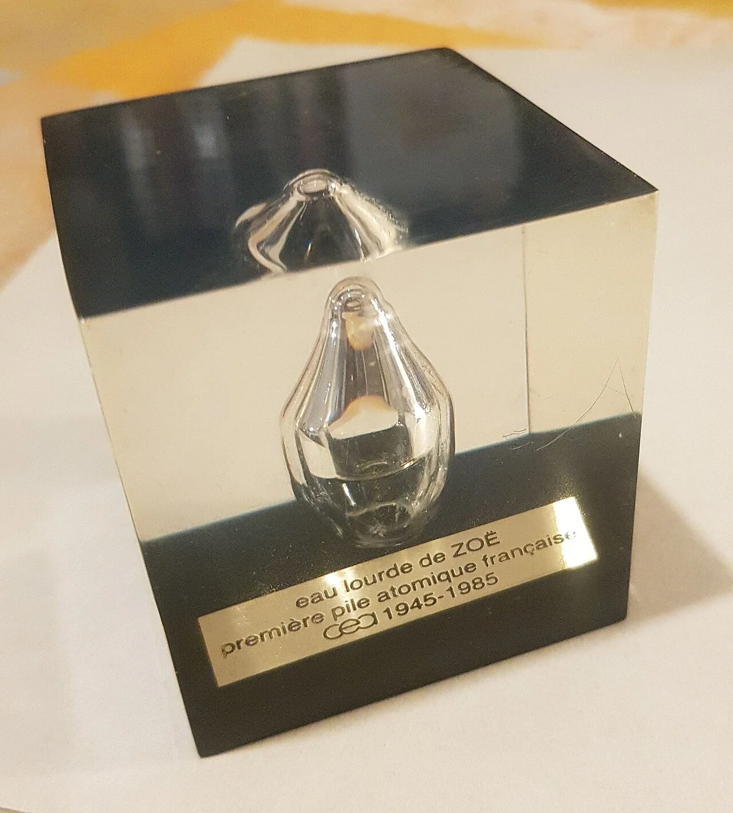
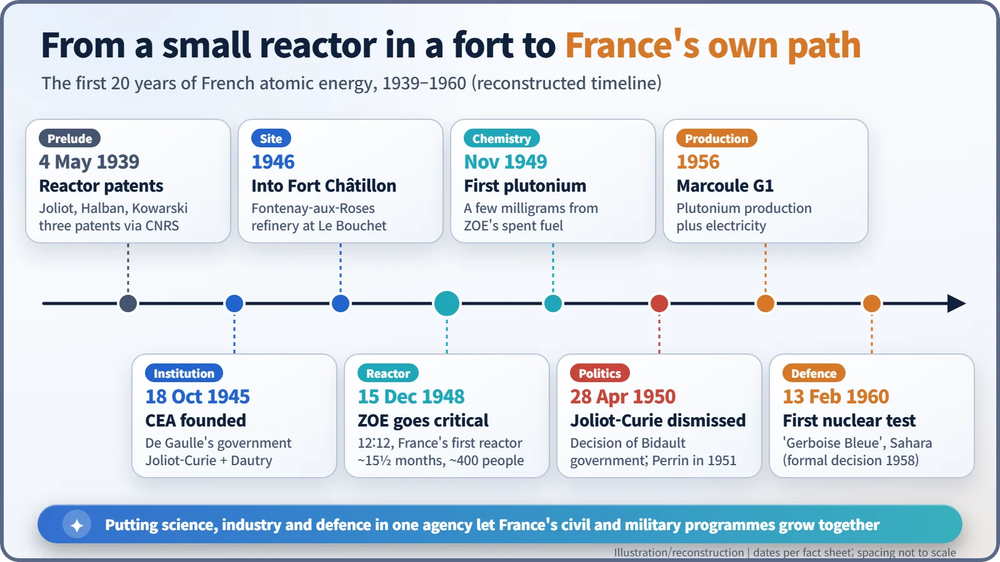

Nuclear History · 147
Zero Power, Big Start — France's CEA and Its First Reactor, ZOE (1945–1948)
A two-headed agency for science, industry and defence, uranium hidden in Morocco, Norwegian heavy water, and a 'zero power' reactor that started at 12:12.
On 18 October 1945 de Gaulle's provisional government created the Commissariat à l'énergie atomique (CEA), an agency for science, industry and defence led jointly by Frédéric Joliot-Curie and Raoul Dautry. Three years later, at 12:12 on 15 December 1948, its first reactor, ZOE, went critical inside an old fort south of Paris, running on natural uranium oxide and Norwegian heavy water with almost no power at all.
Twelve minutes past noon
At twelve minutes past noon on Wednesday, 15 December 1948, inside an old stone fort on a hill just south of Paris, a tank of uranium and water went "critical". In plain terms, nuclear fission had begun to keep itself going: each split atom released neutrons that went on to split the next, with no outside help. France's first nuclear reactor, ZOE, had woken up. [1] [3]
The man in charge of building it was Lew Kowarski (1907–1979). During the war he had escaped to Britain with France's precious cans of heavy water, and in Canada he had supervised the small ZEEP reactor. This time the reactor was his own country's. [5]
An agency with two heads
Wind the clock back three years. France was liberated in 1944–45, but its factories were wrecked and food was still rationed. The Paris nuclear group, which had filed reactor patents as early as 1939, had been scattered by the war, and in the meantime the United States had built the atomic bomb. According to the CEA, on 11 July 1944 French scientists working in Canada had quietly briefed General Charles de Gaulle (1890–1970) in Ottawa about the Manhattan Project. [2]
De Gaulle's provisional government answered with a new state agency. An ordinance of 18 October 1945 created the Commissariat à l'énergie atomique, or CEA. The text, drafted by the Conseil d'État member Jean Toutée, was put to de Gaulle on 14 October and approved by the government four days later. Its task, in the CEA's own summary, was research into the use of nuclear energy "for scientific, industrial and defence purposes" alike. It reported directly to the head of government and enjoyed unusual financial and administrative independence. [1] [2]
The striking feature was that it had two heads. Science was led by the High Commissioner, Frédéric Joliot-Curie (1900–1958), who had shared the 1935 Nobel Prize in Chemistry with his wife Irène. Money and management went to the Administrator-General, Raoul Dautry (1880–1951), a veteran railway manager and former armaments minister. Irène Joliot-Curie, Pierre Auger and Francis Perrin joined as commissioners.

A fort in the town of roses, uranium from Morocco
Where do you put a brand-new atomic laboratory? In 1946 the CEA took over the nineteenth-century Fort de Châtillon, which straddles Châtillon and Fontenay-aux-Roses, a town whose name means roughly "fountain of roses". Thick walls and plenty of space suited the job, but almost everything else had to be improvised. [2]
Materials were the real problem. With its Atomic Energy Act of 1946, the United States had decided not to share nuclear information abroad, and France could not count on Britain either. But France had a hidden asset. According to the CEA, uranium bought from the Belgian Congo in 1939 had spent the war concealed in a phosphate mine in Morocco. It was refined at a former explosives works at Le Bouchet, south of Paris. The moderator, about five tonnes of heavy water, was bought from Norsk Hydro in Norway. [2] [5]
The name is the blueprint
ZOE is an acronym: Zéro énergie (zero power), Oxyde d'uranium (uranium oxide) and Eau lourde (heavy water). Read the name and you have the recipe. [3]

Start with the O. The fuel was natural, unenriched uranium oxide, about three tonnes of it in 60 aluminium-clad rods (some sources give closer to two tonnes). Natural uranium contains only about 0.7% of the easily split uranium-235, so a reactor like this cannot afford to waste neutrons. [5]
That is why the E matters. Neutrons born in fission are fast, and they need slowing down before they can efficiently split the next uranium-235 nucleus. Heavy water slows them while swallowing very few — think of a strict accountant who lets nothing leak from the books. Graphite around the tank bounced escaping neutrons back in, cadmium rods soaked up neutrons to keep the reaction on a short leash, and a concrete wall two metres thick did the shielding.
Finally, the Z. "Zero power" did not mean literally zero; it meant the output was so low that no cooling system was needed. ZOE was never meant to make electricity. It was a teaching and measuring machine for studying how neutrons behave. The CEA says about 400 people built it in roughly fifteen and a half months. Its power was later raised step by step, reaching 150 kilowatts by 1953. [2] [5]
Three paths from one tank
A few days after start-up, President Vincent Auriol visited the fort. ZOE was France's first reactor, but not Western Europe's first: Britain's GLEEP had gone critical in August 1947. [4]
ZOE's spent fuel soon led to the next step. In November 1949 a team under the chemist Bertrand Goldschmidt (1912–2002) extracted France's first few milligrams of plutonium at Le Bouchet. [6]
The Cold War also reached the laboratory. Joliot-Curie, a member of the French Communist Party, led the Stockholm Appeal of March 1950 calling for atomic weapons to be banned. In April, at a party congress, he said in substance that progressive scientists would not give their knowledge to an atomic bomb (the exact wording varies between accounts). On 28 April 1950 the government of Georges Bidault removed him as High Commissioner. No official reason was given; his party membership and peace campaigning are usually cited as the background, and historians still judge the decision differently. [7]
Francis Perrin succeeded him in 1951. The CEA started the G1 reactor at Marcoule in 1956, and after a formal government decision in 1958, France carried out its first nuclear test in the Sahara on 13 February 1960. The founding text's "science, industry and defence" had let the civil and military branches grow side by side.
ZOE itself ran until 1976, used for physics experiments, calibrating detectors, producing radioisotopes for medicine and science, and training reactor operators. Its building is now a museum space. Around the CEA's 40th anniversary, some of ZOE's heavy water was even sealed in small glass ampoules set in clear resin as keepsakes. [3]

Today France makes much of its electricity from nuclear power. Its starting point was not a grand power station but a "zero power" tank inside a fort in the town of roses.
